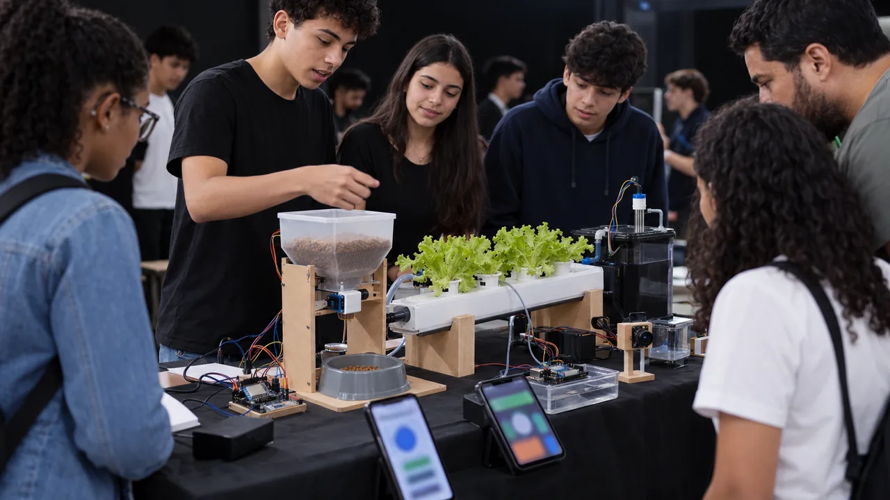
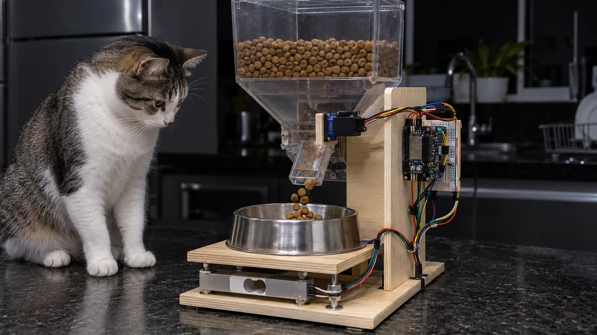
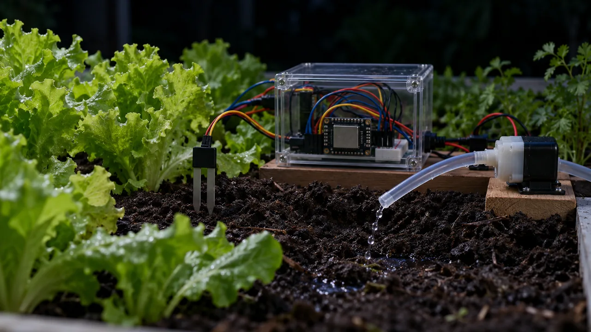
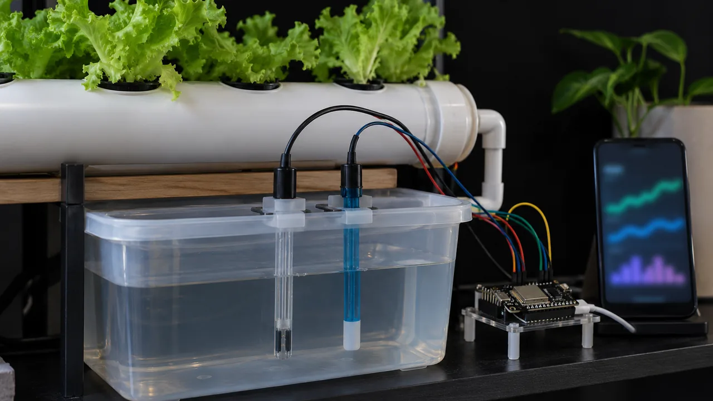
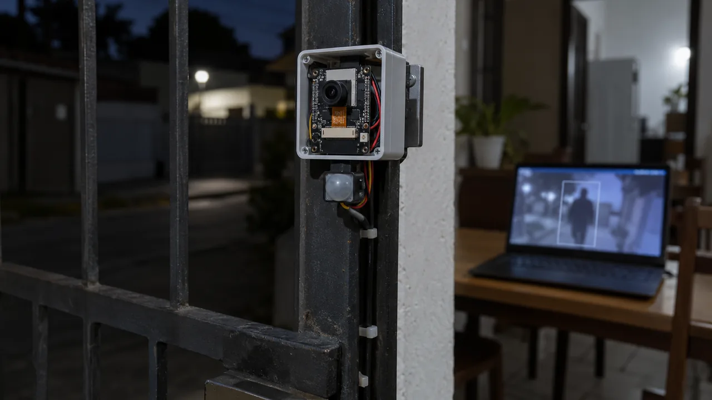
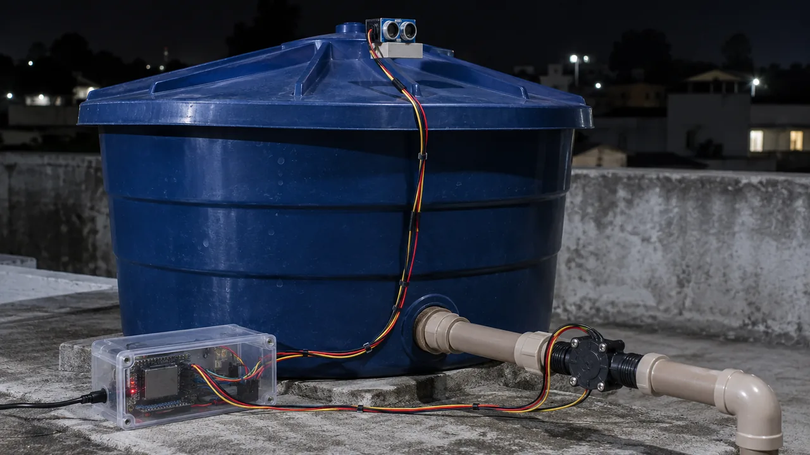
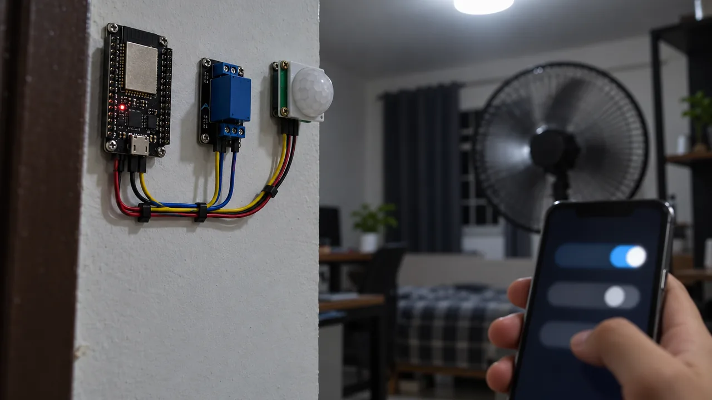

MOSTRATEC 2026 · Soluções que vendemProjetos de automação com IA que você monta e consegue vender
Sete projetos com uma placa ESP32, sensores baratos e um painel no celular. Cada guia mostra o circuito, a lista de compras, o código, como testar e quanto cobrar. Você monta em casa ou na escola, sozinho ou em dupla.
Por que dá dinheiro
Tem gente perto de você pagando para resolver isso
Os problemas são pequenos e se repetem toda semana: o pet que fica sozinho no feriado, a horta que seca, a conta de luz que subiu e ninguém sabe por quê. Quem resolve com um aparelho que custa menos de R$ 200 e mostra o resultado no celular tem o que vender.
Vizinhos
Painel de energia e de água, aviso de caixa d'água baixa, luz que acende sozinha.
Pet shops e donos de pet
Comedouro automático com aviso de "não comeu hoje" para quem viaja ou trabalha fora.
Hortas escolares
Irrigação que rega só quando a terra pede, mesmo no fim de semana e nas férias.
Pequenos produtores
Hidroponia com medida de sais e pH, irrigação e controle de bomba por horário.
Condomínios e lojas
Câmera que avisa só quando aparece uma pessoa, consumo de água por bloco, vazamento de madrugada.
O catálogo
As 7 soluções
Custo do kit = só a parte eletrônica, em preços aproximados de loja online brasileira em outubro de 2026 (a conferir antes de comprar). Câmera IP, computador e caixa de acabamento ficam de fora.

Pet automático
Solta a ração na hora certa, pesa o pote e avisa se o pet não comeu. Boia avisa quando a água acaba.
Abrir o guia →
Irrigação inteligente
Mede a umidade da terra, a luz e a temperatura. Liga a bomba só quando a planta precisa.
Abrir o guia →
Nutrientes da planta
Mede os sais da água (TDS/EC) e o pH da hidroponia. A IA explica em português o que corrigir.
Abrir o guia →
Vigilância com câmera
Detecta pessoa (não gato, não galho balançando) com IA rodando no seu computador e manda o alerta com foto.
Abrir o guia →
Painel de energia
Mostra o consumo da casa em tempo real e em reais, com sensor de garra que não corta nenhum fio.
Abrir o guia →
Painel de água
Conta os litros que passam no cano, mede o nível da caixa d'água e acusa vazamento de madrugada.
Abrir o guia →
Controle da casa ou da sala
Liga e desliga luz e ventilador pelo celular, por horário ou quando alguém entra. Aceita comando em texto.
Abrir o guia →A base é sempre a mesma
Aprenda uma vez, use nos sete projetos
Todo projeto tem quatro partes. Quando você monta o primeiro, já sabe a maior parte do segundo: muda o sensor e algumas linhas do código.
ESP32
Placa com Wi-Fi, na faixa de R$ 35 a R$ 55 (a conferir). Programa na Arduino IDE, liga no cabo USB do computador.
Sensores e atuadores
Sensor mede (peso, umidade, corrente). Atuador age (servo, relé, bomba). Tudo em 3,3 V a 12 V.
Painel
O próprio ESP32 mostra os números numa página que abre no celular, na mesma rede Wi-Fi. Depois dá para usar o Home Assistant.
IA
Lê os dados e responde perguntas como "quanto gastei de água esta semana?". Roda com a sua conta num serviço de IA ou num modelo local no PC.
Como vender
A ficha de negócio: quatro números
Cada guia tem uma ficha pronta. A lógica é a mesma em todas: você cobra pelo aparelho, pela instalação e, se quiser, por mês pelo painel e pelos alertas.
| Item | O que é | Como calcular |
|---|---|---|
| Custo do kit | O que você paga nas peças | Some a lista de compras do guia, com frete |
| Preço do aparelho | O que o cliente paga pelo aparelho montado | Sugestão: de 2 a 3 vezes o custo do kit |
| Instalação | Seu tempo para instalar, configurar e ensinar | Horas de trabalho × o valor da sua hora |
| Assinatura | Painel, alertas e ajuste mensal (opcional) | Valor baixo por mês, cobrado só se você der suporte de verdade |
Exemplo: kit R$ 130 → preço R$ 330
+ instalação 2 h × R$ 30 = R$ 60
Cliente paga R$ 390. Você fica com R$ 260
para o seu tempo de montagem e a margem.
Segurança
Três regras que valem para todos
Para ir além
Continue nos cursos abertos do INEMA.CLUB
Os cursos são gratuitos e abertos. Use para entender a IA que entra nos projetos e para dar o próximo passo com robótica.
IA do zero
O que um modelo de IA faz, como pedir e como conferir a resposta.
Abrir curso →Robótica
Sensores, motores e controle: o mesmo raciocínio dos projetos, num robô.
Abrir curso →Visão e ação (VLA)
Modelos que veem pela câmera e decidem o que fazer.
Abrir curso →OSWork
Use um agente de IA no terminal para ajudar a escrever e corrigir o código.
Abrir curso →